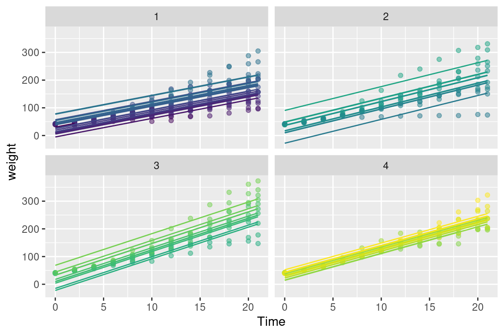

10 Mixed models (with autocorrelation!)
_(cropped).jpg){kind=link}
10.1 Some motivation
Way back in chapter Chapter 3, we argued that movement data was so complicated and fancy that we absolutely needed fancy statistical concepts just to wrap our modeling around the data. Somewhat dismissively, we contrasted movement data to the kind of experimental, design-based statistics that are usually summed up with ANOVA. And - in particular - we used an example of an experiment with the weights of chicks (Gallus gallus domesticus) as modeled against various diets. Very simple, controlled experimental design: A bunch of chicks, several diets, measure weights, apply ANOVA - and your simple questions, namely: what diet leads to larger chicks?, is immediately answered.
In fact, nothing is quite so simple. This chapter - which has nothing directly to do with spatial data or movement data - mainly serves to systematically illustrate via an example what mixed models (that combines fixed effects and random effects) actually are, and when and why we might choose to use them. It also illustrates a somewhat non-trivial, but very important, context for incorporating auto-correlation in a linear model. And all of that in the context of asking a very simple question, that emerges directly from a simple experimental design in a controlled experiment, namely: under what diet do chicks grow fastest?
10.2 Chick Weights
The data are located in all R installations, and called ChickWeight:
data("ChickWeight")| weight | Time | Chick | Diet |
|---|---|---|---|
| 42 | 0 | 1 | 1 |
| 51 | 2 | 1 | 1 |
| 59 | 4 | 1 | 1 |
| 64 | 6 | 1 | 1 |
| 76 | 8 | 1 | 1 |
| 93 | 10 | 1 | 1 |
| 106 | 12 | 1 | 1 |
| 125 | 14 | 1 | 1 |
| 149 | 16 | 1 | 1 |
| 171 | 18 | 1 | 1 |
| 199 | 20 | 1 | 1 |
| 205 | 21 | 1 | 1 |
| 40 | 0 | 2 | 1 |
| 49 | 2 | 2 | 1 |
| 58 | 4 | 2 | 1 |
| 72 | 6 | 2 | 1 |
| 84 | 8 | 2 | 1 |
| 103 | 10 | 2 | 1 |
| 122 | 12 | 2 | 1 |
| 138 | 14 | 2 | 1 |
| 162 | 16 | 2 | 1 |
| 187 | 18 | 2 | 1 |
| 209 | 20 | 2 | 1 |
| 215 | 21 | 2 | 1 |
| 43 | 0 | 3 | 1 |
| 39 | 2 | 3 | 1 |
| 55 | 4 | 3 | 1 |
| 67 | 6 | 3 | 1 |
| 84 | 8 | 3 | 1 |
| 99 | 10 | 3 | 1 |
| 115 | 12 | 3 | 1 |
| 138 | 14 | 3 | 1 |
| 163 | 16 | 3 | 1 |
| 187 | 18 | 3 | 1 |
| 198 | 20 | 3 | 1 |
| 202 | 21 | 3 | 1 |
| 42 | 0 | 4 | 1 |
| 49 | 2 | 4 | 1 |
| 56 | 4 | 4 | 1 |
| 67 | 6 | 4 | 1 |
| 74 | 8 | 4 | 1 |
| 87 | 10 | 4 | 1 |
| 102 | 12 | 4 | 1 |
| 108 | 14 | 4 | 1 |
| 136 | 16 | 4 | 1 |
| 154 | 18 | 4 | 1 |
| 160 | 20 | 4 | 1 |
| 157 | 21 | 4 | 1 |
| 41 | 0 | 5 | 1 |
| 42 | 2 | 5 | 1 |
| 48 | 4 | 5 | 1 |
| 60 | 6 | 5 | 1 |
| 79 | 8 | 5 | 1 |
| 106 | 10 | 5 | 1 |
| 141 | 12 | 5 | 1 |
| 164 | 14 | 5 | 1 |
| 197 | 16 | 5 | 1 |
| 199 | 18 | 5 | 1 |
| 220 | 20 | 5 | 1 |
| 223 | 21 | 5 | 1 |
| 41 | 0 | 6 | 1 |
| 49 | 2 | 6 | 1 |
| 59 | 4 | 6 | 1 |
| 74 | 6 | 6 | 1 |
| 97 | 8 | 6 | 1 |
| 124 | 10 | 6 | 1 |
| 141 | 12 | 6 | 1 |
| 148 | 14 | 6 | 1 |
| 155 | 16 | 6 | 1 |
| 160 | 18 | 6 | 1 |
| 160 | 20 | 6 | 1 |
| 157 | 21 | 6 | 1 |
| 41 | 0 | 7 | 1 |
| 49 | 2 | 7 | 1 |
| 57 | 4 | 7 | 1 |
| 71 | 6 | 7 | 1 |
| 89 | 8 | 7 | 1 |
| 112 | 10 | 7 | 1 |
| 146 | 12 | 7 | 1 |
| 174 | 14 | 7 | 1 |
| 218 | 16 | 7 | 1 |
| 250 | 18 | 7 | 1 |
| 288 | 20 | 7 | 1 |
| 305 | 21 | 7 | 1 |
| 42 | 0 | 8 | 1 |
| 50 | 2 | 8 | 1 |
| 61 | 4 | 8 | 1 |
| 71 | 6 | 8 | 1 |
| 84 | 8 | 8 | 1 |
| 93 | 10 | 8 | 1 |
| 110 | 12 | 8 | 1 |
| 116 | 14 | 8 | 1 |
| 126 | 16 | 8 | 1 |
| 134 | 18 | 8 | 1 |
| 125 | 20 | 8 | 1 |
| 42 | 0 | 9 | 1 |
| 51 | 2 | 9 | 1 |
| 59 | 4 | 9 | 1 |
| 68 | 6 | 9 | 1 |
| 85 | 8 | 9 | 1 |
| 96 | 10 | 9 | 1 |
| 90 | 12 | 9 | 1 |
| 92 | 14 | 9 | 1 |
| 93 | 16 | 9 | 1 |
| 100 | 18 | 9 | 1 |
| 100 | 20 | 9 | 1 |
| 98 | 21 | 9 | 1 |
| 41 | 0 | 10 | 1 |
| 44 | 2 | 10 | 1 |
| 52 | 4 | 10 | 1 |
| 63 | 6 | 10 | 1 |
| 74 | 8 | 10 | 1 |
| 81 | 10 | 10 | 1 |
| 89 | 12 | 10 | 1 |
| 96 | 14 | 10 | 1 |
| 101 | 16 | 10 | 1 |
| 112 | 18 | 10 | 1 |
| 120 | 20 | 10 | 1 |
| 124 | 21 | 10 | 1 |
| 43 | 0 | 11 | 1 |
| 51 | 2 | 11 | 1 |
| 63 | 4 | 11 | 1 |
| 84 | 6 | 11 | 1 |
| 112 | 8 | 11 | 1 |
| 139 | 10 | 11 | 1 |
| 168 | 12 | 11 | 1 |
| 177 | 14 | 11 | 1 |
| 182 | 16 | 11 | 1 |
| 184 | 18 | 11 | 1 |
| 181 | 20 | 11 | 1 |
| 175 | 21 | 11 | 1 |
| 41 | 0 | 12 | 1 |
| 49 | 2 | 12 | 1 |
| 56 | 4 | 12 | 1 |
| 62 | 6 | 12 | 1 |
| 72 | 8 | 12 | 1 |
| 88 | 10 | 12 | 1 |
| 119 | 12 | 12 | 1 |
| 135 | 14 | 12 | 1 |
| 162 | 16 | 12 | 1 |
| 185 | 18 | 12 | 1 |
| 195 | 20 | 12 | 1 |
| 205 | 21 | 12 | 1 |
| 41 | 0 | 13 | 1 |
| 48 | 2 | 13 | 1 |
| 53 | 4 | 13 | 1 |
| 60 | 6 | 13 | 1 |
| 65 | 8 | 13 | 1 |
| 67 | 10 | 13 | 1 |
| 71 | 12 | 13 | 1 |
| 70 | 14 | 13 | 1 |
| 71 | 16 | 13 | 1 |
| 81 | 18 | 13 | 1 |
| 91 | 20 | 13 | 1 |
| 96 | 21 | 13 | 1 |
| 41 | 0 | 14 | 1 |
| 49 | 2 | 14 | 1 |
| 62 | 4 | 14 | 1 |
| 79 | 6 | 14 | 1 |
| 101 | 8 | 14 | 1 |
| 128 | 10 | 14 | 1 |
| 164 | 12 | 14 | 1 |
| 192 | 14 | 14 | 1 |
| 227 | 16 | 14 | 1 |
| 248 | 18 | 14 | 1 |
| 259 | 20 | 14 | 1 |
| 266 | 21 | 14 | 1 |
| 41 | 0 | 15 | 1 |
| 49 | 2 | 15 | 1 |
| 56 | 4 | 15 | 1 |
| 64 | 6 | 15 | 1 |
| 68 | 8 | 15 | 1 |
| 68 | 10 | 15 | 1 |
| 67 | 12 | 15 | 1 |
| 68 | 14 | 15 | 1 |
| 41 | 0 | 16 | 1 |
| 45 | 2 | 16 | 1 |
| 49 | 4 | 16 | 1 |
| 51 | 6 | 16 | 1 |
| 57 | 8 | 16 | 1 |
| 51 | 10 | 16 | 1 |
| 54 | 12 | 16 | 1 |
| 42 | 0 | 17 | 1 |
| 51 | 2 | 17 | 1 |
| 61 | 4 | 17 | 1 |
| 72 | 6 | 17 | 1 |
| 83 | 8 | 17 | 1 |
| 89 | 10 | 17 | 1 |
| 98 | 12 | 17 | 1 |
| 103 | 14 | 17 | 1 |
| 113 | 16 | 17 | 1 |
| 123 | 18 | 17 | 1 |
| 133 | 20 | 17 | 1 |
| 142 | 21 | 17 | 1 |
| 39 | 0 | 18 | 1 |
| 35 | 2 | 18 | 1 |
| 43 | 0 | 19 | 1 |
| 48 | 2 | 19 | 1 |
| 55 | 4 | 19 | 1 |
| 62 | 6 | 19 | 1 |
| 65 | 8 | 19 | 1 |
| 71 | 10 | 19 | 1 |
| 82 | 12 | 19 | 1 |
| 88 | 14 | 19 | 1 |
| 106 | 16 | 19 | 1 |
| 120 | 18 | 19 | 1 |
| 144 | 20 | 19 | 1 |
| 157 | 21 | 19 | 1 |
| 41 | 0 | 20 | 1 |
| 47 | 2 | 20 | 1 |
| 54 | 4 | 20 | 1 |
| 58 | 6 | 20 | 1 |
| 65 | 8 | 20 | 1 |
| 73 | 10 | 20 | 1 |
| 77 | 12 | 20 | 1 |
| 89 | 14 | 20 | 1 |
| 98 | 16 | 20 | 1 |
| 107 | 18 | 20 | 1 |
| 115 | 20 | 20 | 1 |
| 117 | 21 | 20 | 1 |
| 40 | 0 | 21 | 2 |
| 50 | 2 | 21 | 2 |
| 62 | 4 | 21 | 2 |
| 86 | 6 | 21 | 2 |
| 125 | 8 | 21 | 2 |
| 163 | 10 | 21 | 2 |
| 217 | 12 | 21 | 2 |
| 240 | 14 | 21 | 2 |
| 275 | 16 | 21 | 2 |
| 307 | 18 | 21 | 2 |
| 318 | 20 | 21 | 2 |
| 331 | 21 | 21 | 2 |
| 41 | 0 | 22 | 2 |
| 55 | 2 | 22 | 2 |
| 64 | 4 | 22 | 2 |
| 77 | 6 | 22 | 2 |
| 90 | 8 | 22 | 2 |
| 95 | 10 | 22 | 2 |
| 108 | 12 | 22 | 2 |
| 111 | 14 | 22 | 2 |
| 131 | 16 | 22 | 2 |
| 148 | 18 | 22 | 2 |
| 164 | 20 | 22 | 2 |
| 167 | 21 | 22 | 2 |
| 43 | 0 | 23 | 2 |
| 52 | 2 | 23 | 2 |
| 61 | 4 | 23 | 2 |
| 73 | 6 | 23 | 2 |
| 90 | 8 | 23 | 2 |
| 103 | 10 | 23 | 2 |
| 127 | 12 | 23 | 2 |
| 135 | 14 | 23 | 2 |
| 145 | 16 | 23 | 2 |
| 163 | 18 | 23 | 2 |
| 170 | 20 | 23 | 2 |
| 175 | 21 | 23 | 2 |
| 42 | 0 | 24 | 2 |
| 52 | 2 | 24 | 2 |
| 58 | 4 | 24 | 2 |
| 74 | 6 | 24 | 2 |
| 66 | 8 | 24 | 2 |
| 68 | 10 | 24 | 2 |
| 70 | 12 | 24 | 2 |
| 71 | 14 | 24 | 2 |
| 72 | 16 | 24 | 2 |
| 72 | 18 | 24 | 2 |
| 76 | 20 | 24 | 2 |
| 74 | 21 | 24 | 2 |
| 40 | 0 | 25 | 2 |
| 49 | 2 | 25 | 2 |
| 62 | 4 | 25 | 2 |
| 78 | 6 | 25 | 2 |
| 102 | 8 | 25 | 2 |
| 124 | 10 | 25 | 2 |
| 146 | 12 | 25 | 2 |
| 164 | 14 | 25 | 2 |
| 197 | 16 | 25 | 2 |
| 231 | 18 | 25 | 2 |
| 259 | 20 | 25 | 2 |
| 265 | 21 | 25 | 2 |
| 42 | 0 | 26 | 2 |
| 48 | 2 | 26 | 2 |
| 57 | 4 | 26 | 2 |
| 74 | 6 | 26 | 2 |
| 93 | 8 | 26 | 2 |
| 114 | 10 | 26 | 2 |
| 136 | 12 | 26 | 2 |
| 147 | 14 | 26 | 2 |
| 169 | 16 | 26 | 2 |
| 205 | 18 | 26 | 2 |
| 236 | 20 | 26 | 2 |
| 251 | 21 | 26 | 2 |
| 39 | 0 | 27 | 2 |
| 46 | 2 | 27 | 2 |
| 58 | 4 | 27 | 2 |
| 73 | 6 | 27 | 2 |
| 87 | 8 | 27 | 2 |
| 100 | 10 | 27 | 2 |
| 115 | 12 | 27 | 2 |
| 123 | 14 | 27 | 2 |
| 144 | 16 | 27 | 2 |
| 163 | 18 | 27 | 2 |
| 185 | 20 | 27 | 2 |
| 192 | 21 | 27 | 2 |
| 39 | 0 | 28 | 2 |
| 46 | 2 | 28 | 2 |
| 58 | 4 | 28 | 2 |
| 73 | 6 | 28 | 2 |
| 92 | 8 | 28 | 2 |
| 114 | 10 | 28 | 2 |
| 145 | 12 | 28 | 2 |
| 156 | 14 | 28 | 2 |
| 184 | 16 | 28 | 2 |
| 207 | 18 | 28 | 2 |
| 212 | 20 | 28 | 2 |
| 233 | 21 | 28 | 2 |
| 39 | 0 | 29 | 2 |
| 48 | 2 | 29 | 2 |
| 59 | 4 | 29 | 2 |
| 74 | 6 | 29 | 2 |
| 87 | 8 | 29 | 2 |
| 106 | 10 | 29 | 2 |
| 134 | 12 | 29 | 2 |
| 150 | 14 | 29 | 2 |
| 187 | 16 | 29 | 2 |
| 230 | 18 | 29 | 2 |
| 279 | 20 | 29 | 2 |
| 309 | 21 | 29 | 2 |
| 42 | 0 | 30 | 2 |
| 48 | 2 | 30 | 2 |
| 59 | 4 | 30 | 2 |
| 72 | 6 | 30 | 2 |
| 85 | 8 | 30 | 2 |
| 98 | 10 | 30 | 2 |
| 115 | 12 | 30 | 2 |
| 122 | 14 | 30 | 2 |
| 143 | 16 | 30 | 2 |
| 151 | 18 | 30 | 2 |
| 157 | 20 | 30 | 2 |
| 150 | 21 | 30 | 2 |
| 42 | 0 | 31 | 3 |
| 53 | 2 | 31 | 3 |
| 62 | 4 | 31 | 3 |
| 73 | 6 | 31 | 3 |
| 85 | 8 | 31 | 3 |
| 102 | 10 | 31 | 3 |
| 123 | 12 | 31 | 3 |
| 138 | 14 | 31 | 3 |
| 170 | 16 | 31 | 3 |
| 204 | 18 | 31 | 3 |
| 235 | 20 | 31 | 3 |
| 256 | 21 | 31 | 3 |
| 41 | 0 | 32 | 3 |
| 49 | 2 | 32 | 3 |
| 65 | 4 | 32 | 3 |
| 82 | 6 | 32 | 3 |
| 107 | 8 | 32 | 3 |
| 129 | 10 | 32 | 3 |
| 159 | 12 | 32 | 3 |
| 179 | 14 | 32 | 3 |
| 221 | 16 | 32 | 3 |
| 263 | 18 | 32 | 3 |
| 291 | 20 | 32 | 3 |
| 305 | 21 | 32 | 3 |
| 39 | 0 | 33 | 3 |
| 50 | 2 | 33 | 3 |
| 63 | 4 | 33 | 3 |
| 77 | 6 | 33 | 3 |
| 96 | 8 | 33 | 3 |
| 111 | 10 | 33 | 3 |
| 137 | 12 | 33 | 3 |
| 144 | 14 | 33 | 3 |
| 151 | 16 | 33 | 3 |
| 146 | 18 | 33 | 3 |
| 156 | 20 | 33 | 3 |
| 147 | 21 | 33 | 3 |
| 41 | 0 | 34 | 3 |
| 49 | 2 | 34 | 3 |
| 63 | 4 | 34 | 3 |
| 85 | 6 | 34 | 3 |
| 107 | 8 | 34 | 3 |
| 134 | 10 | 34 | 3 |
| 164 | 12 | 34 | 3 |
| 186 | 14 | 34 | 3 |
| 235 | 16 | 34 | 3 |
| 294 | 18 | 34 | 3 |
| 327 | 20 | 34 | 3 |
| 341 | 21 | 34 | 3 |
| 41 | 0 | 35 | 3 |
| 53 | 2 | 35 | 3 |
| 64 | 4 | 35 | 3 |
| 87 | 6 | 35 | 3 |
| 123 | 8 | 35 | 3 |
| 158 | 10 | 35 | 3 |
| 201 | 12 | 35 | 3 |
| 238 | 14 | 35 | 3 |
| 287 | 16 | 35 | 3 |
| 332 | 18 | 35 | 3 |
| 361 | 20 | 35 | 3 |
| 373 | 21 | 35 | 3 |
| 39 | 0 | 36 | 3 |
| 48 | 2 | 36 | 3 |
| 61 | 4 | 36 | 3 |
| 76 | 6 | 36 | 3 |
| 98 | 8 | 36 | 3 |
| 116 | 10 | 36 | 3 |
| 145 | 12 | 36 | 3 |
| 166 | 14 | 36 | 3 |
| 198 | 16 | 36 | 3 |
| 227 | 18 | 36 | 3 |
| 225 | 20 | 36 | 3 |
| 220 | 21 | 36 | 3 |
| 41 | 0 | 37 | 3 |
| 48 | 2 | 37 | 3 |
| 56 | 4 | 37 | 3 |
| 68 | 6 | 37 | 3 |
| 80 | 8 | 37 | 3 |
| 83 | 10 | 37 | 3 |
| 103 | 12 | 37 | 3 |
| 112 | 14 | 37 | 3 |
| 135 | 16 | 37 | 3 |
| 157 | 18 | 37 | 3 |
| 169 | 20 | 37 | 3 |
| 178 | 21 | 37 | 3 |
| 41 | 0 | 38 | 3 |
| 49 | 2 | 38 | 3 |
| 61 | 4 | 38 | 3 |
| 74 | 6 | 38 | 3 |
| 98 | 8 | 38 | 3 |
| 109 | 10 | 38 | 3 |
| 128 | 12 | 38 | 3 |
| 154 | 14 | 38 | 3 |
| 192 | 16 | 38 | 3 |
| 232 | 18 | 38 | 3 |
| 280 | 20 | 38 | 3 |
| 290 | 21 | 38 | 3 |
| 42 | 0 | 39 | 3 |
| 50 | 2 | 39 | 3 |
| 61 | 4 | 39 | 3 |
| 78 | 6 | 39 | 3 |
| 89 | 8 | 39 | 3 |
| 109 | 10 | 39 | 3 |
| 130 | 12 | 39 | 3 |
| 146 | 14 | 39 | 3 |
| 170 | 16 | 39 | 3 |
| 214 | 18 | 39 | 3 |
| 250 | 20 | 39 | 3 |
| 272 | 21 | 39 | 3 |
| 41 | 0 | 40 | 3 |
| 55 | 2 | 40 | 3 |
| 66 | 4 | 40 | 3 |
| 79 | 6 | 40 | 3 |
| 101 | 8 | 40 | 3 |
| 120 | 10 | 40 | 3 |
| 154 | 12 | 40 | 3 |
| 182 | 14 | 40 | 3 |
| 215 | 16 | 40 | 3 |
| 262 | 18 | 40 | 3 |
| 295 | 20 | 40 | 3 |
| 321 | 21 | 40 | 3 |
| 42 | 0 | 41 | 4 |
| 51 | 2 | 41 | 4 |
| 66 | 4 | 41 | 4 |
| 85 | 6 | 41 | 4 |
| 103 | 8 | 41 | 4 |
| 124 | 10 | 41 | 4 |
| 155 | 12 | 41 | 4 |
| 153 | 14 | 41 | 4 |
| 175 | 16 | 41 | 4 |
| 184 | 18 | 41 | 4 |
| 199 | 20 | 41 | 4 |
| 204 | 21 | 41 | 4 |
| 42 | 0 | 42 | 4 |
| 49 | 2 | 42 | 4 |
| 63 | 4 | 42 | 4 |
| 84 | 6 | 42 | 4 |
| 103 | 8 | 42 | 4 |
| 126 | 10 | 42 | 4 |
| 160 | 12 | 42 | 4 |
| 174 | 14 | 42 | 4 |
| 204 | 16 | 42 | 4 |
| 234 | 18 | 42 | 4 |
| 269 | 20 | 42 | 4 |
| 281 | 21 | 42 | 4 |
| 42 | 0 | 43 | 4 |
| 55 | 2 | 43 | 4 |
| 69 | 4 | 43 | 4 |
| 96 | 6 | 43 | 4 |
| 131 | 8 | 43 | 4 |
| 157 | 10 | 43 | 4 |
| 184 | 12 | 43 | 4 |
| 188 | 14 | 43 | 4 |
| 197 | 16 | 43 | 4 |
| 198 | 18 | 43 | 4 |
| 199 | 20 | 43 | 4 |
| 200 | 21 | 43 | 4 |
| 42 | 0 | 44 | 4 |
| 51 | 2 | 44 | 4 |
| 65 | 4 | 44 | 4 |
| 86 | 6 | 44 | 4 |
| 103 | 8 | 44 | 4 |
| 118 | 10 | 44 | 4 |
| 127 | 12 | 44 | 4 |
| 138 | 14 | 44 | 4 |
| 145 | 16 | 44 | 4 |
| 146 | 18 | 44 | 4 |
| 41 | 0 | 45 | 4 |
| 50 | 2 | 45 | 4 |
| 61 | 4 | 45 | 4 |
| 78 | 6 | 45 | 4 |
| 98 | 8 | 45 | 4 |
| 117 | 10 | 45 | 4 |
| 135 | 12 | 45 | 4 |
| 141 | 14 | 45 | 4 |
| 147 | 16 | 45 | 4 |
| 174 | 18 | 45 | 4 |
| 197 | 20 | 45 | 4 |
| 196 | 21 | 45 | 4 |
| 40 | 0 | 46 | 4 |
| 52 | 2 | 46 | 4 |
| 62 | 4 | 46 | 4 |
| 82 | 6 | 46 | 4 |
| 101 | 8 | 46 | 4 |
| 120 | 10 | 46 | 4 |
| 144 | 12 | 46 | 4 |
| 156 | 14 | 46 | 4 |
| 173 | 16 | 46 | 4 |
| 210 | 18 | 46 | 4 |
| 231 | 20 | 46 | 4 |
| 238 | 21 | 46 | 4 |
| 41 | 0 | 47 | 4 |
| 53 | 2 | 47 | 4 |
| 66 | 4 | 47 | 4 |
| 79 | 6 | 47 | 4 |
| 100 | 8 | 47 | 4 |
| 123 | 10 | 47 | 4 |
| 148 | 12 | 47 | 4 |
| 157 | 14 | 47 | 4 |
| 168 | 16 | 47 | 4 |
| 185 | 18 | 47 | 4 |
| 210 | 20 | 47 | 4 |
| 205 | 21 | 47 | 4 |
| 39 | 0 | 48 | 4 |
| 50 | 2 | 48 | 4 |
| 62 | 4 | 48 | 4 |
| 80 | 6 | 48 | 4 |
| 104 | 8 | 48 | 4 |
| 125 | 10 | 48 | 4 |
| 154 | 12 | 48 | 4 |
| 170 | 14 | 48 | 4 |
| 222 | 16 | 48 | 4 |
| 261 | 18 | 48 | 4 |
| 303 | 20 | 48 | 4 |
| 322 | 21 | 48 | 4 |
| 40 | 0 | 49 | 4 |
| 53 | 2 | 49 | 4 |
| 64 | 4 | 49 | 4 |
| 85 | 6 | 49 | 4 |
| 108 | 8 | 49 | 4 |
| 128 | 10 | 49 | 4 |
| 152 | 12 | 49 | 4 |
| 166 | 14 | 49 | 4 |
| 184 | 16 | 49 | 4 |
| 203 | 18 | 49 | 4 |
| 233 | 20 | 49 | 4 |
| 237 | 21 | 49 | 4 |
| 41 | 0 | 50 | 4 |
| 54 | 2 | 50 | 4 |
| 67 | 4 | 50 | 4 |
| 84 | 6 | 50 | 4 |
| 105 | 8 | 50 | 4 |
| 122 | 10 | 50 | 4 |
| 155 | 12 | 50 | 4 |
| 175 | 14 | 50 | 4 |
| 205 | 16 | 50 | 4 |
| 234 | 18 | 50 | 4 |
| 264 | 20 | 50 | 4 |
| 264 | 21 | 50 | 4 |
There are just three variables here: Four diet treatments (1-4)1, a bunch of chicks (48) and weight measurements over 20 days of feeding.
1 The actual identities of the chick diets are lost in the mists of used and re-use as a classic statistics example.
For data like these (but not all data!) ggplot is very handy:
require(ggplot2)
ggplot(ChickWeight, aes(x = Time, y = weight, col=Chick)) + geom_line ()+ geom_point() + facet_wrap(~Diet)Clearly, there is variability among individuals, and among treatments, in the slope of growth.
10.3 Some linear models
10.3.1 the simplest
Here’s a linear model with main and interaction effects of time and diet: \[Y_{ij} = (\beta + \gamma_j) \, T_i + \epsilon_{ij}\]
In this formulation, intercept is 0, but the slope has a mean (\(\beta\)) and a diet specific effect (\(\gamma_j\)).
Estimate Std. Error t value Pr(>|t|)
Time:Diet1 8.929575 0.2010880 44.40631 8.087458e-188
Time:Diet2 10.502625 0.2640756 39.77128 4.507463e-167
Time:Diet3 12.629732 0.2640756 47.82620 2.201654e-202
Time:Diet4 11.774316 0.2698661 43.63022 1.996372e-184Note that the “-1” coerced all of the intercepts to 0. Also, all the effects are significant: Weight increases with Time on average at rate 6.85 g/day, some diets lead to a higher overall mean.
Pop quiz: What’s the difference between the following models? Which one matches the model above?
Visualizing the regression lines
ggplot(ChickWeight, aes(x = Time, y = weight, col=factor(Chick))) +
geom_line ()+ geom_point() + facet_wrap(~Diet) +
geom_line(data = cbind(ChickWeight, y.hat = predict(Chick.lm)),
aes(x = Time, y = y.hat), col="darkred", lwd = 1.5) +
theme(legend.position="none")We will be plotting this kind of prediction plot alot, so let’s make a function that makes it quicker. It will be function of a model fit:
plotFit <- function(ChickModel, ...)
ggplot(ChickWeight, aes(x = Time, y = weight, col=factor(Chick))) +
geom_point(alpha = 0.5) + facet_wrap(~Diet) +
geom_line(data = cbind(ChickWeight, y.hat = predict(ChickModel)),
aes(x = Time, y = y.hat), ...) + theme(legend.position="none")anova(Chick.lm)Analysis of Variance Table
Response: weight
Df Sum Sq Mean Sq F value Pr(>F)
Time 1 2042344 2042344 1759.757 < 2.2e-16 ***
Diet 3 129876 43292 37.302 < 2.2e-16 ***
Time:Diet 3 80804 26935 23.208 3.474e-14 ***
Residuals 570 661532 1161
---
Signif. codes: 0 '***' 0.001 '**' 0.01 '*' 0.05 '.' 0.1 ' ' 1ANOVA tells us everything is significant … but we need to check diagnostic plots.
plot(Chick.lm, 1:2)
Both heteroskedasticity and kurtosis2 in the residuals are big problems. The main reason for that is that each individual bird is quite different from the others (see figure Figure 10.1).
2 Knock your socks off statsy vocab words!
10.3.2 Adding individual chicks
One option to deal with this is to simple include “individual bird” in the model:
Analysis of Variance Table
Response: weight
Df Sum Sq Mean Sq F value Pr(>F)
Chick 49 530105 10818 16.806 < 2.2e-16 ***
Time:Diet 4 2047136 511784 795.029 < 2.2e-16 ***
Residuals 524 337315 644
---
Signif. codes: 0 '***' 0.001 '**' 0.01 '*' 0.05 '.' 0.1 ' ' 1plotFit(Chick.lm2)
plot(Chick.lm, 1:2)We’ve absorbed a lot of the variability, but there’s still strong structure to the residuals.
10.3.3 Individual slopes (and getting curvy)
Somewhat better would be to let each individual have a unique slope as well. Let’s also not be naive, and a second order polynomial term to the model - because, you know, growth is not linear and all that:
Chick.lm3 <- lm(weight ~ (Diet * poly(Time,2)) + Time : (Chick-1), data = ChickWeight)
anova(Chick.lm3)Analysis of Variance Table
Response: weight
Df Sum Sq Mean Sq F value Pr(>F)
Diet 4 8733214 2183303 13985.650 < 2.2e-16 ***
poly(Time, 2) 2 2038109 1019055 6527.788 < 2.2e-16 ***
Diet:poly(Time, 2) 6 84264 14044 89.962 < 2.2e-16 ***
Time:Chick 46 555143 12068 77.306 < 2.2e-16 ***
Residuals 520 81177 156
---
Signif. codes: 0 '***' 0.001 '**' 0.01 '*' 0.05 '.' 0.1 ' ' 1plotFit(Chick.lm3)Again, checking our residual diagnostics:
plot(Chick.lm3, 1:2)Well - this model is begginning to look mighty fine! Check out that astronomical R^2 (summary(Chick.lm3)$r.squared = 0.9929361) and decent looking residuals. The big problem, however, is that this has cost us ENORMOUS degrees of freedom! We’ve estimated length(Chick.lm3$coef) = 62 coefficients.
10.3.4 Quick comment on “updating”
Before we fix this problem, a quick comment on a “smarter” workflow for iteratively building models using the update function. This function basically takes your model and adds or removes features as desired.
For example, the Chick.lm1 model above was given by:
Chick.lm1$calllm(formula = weight ~ Time * Diet, data = ChickWeight)Whereas:
Chick.lm2$calllm(formula = weight ~ Time:Diet + Chick, data = ChickWeight)Chick.lm3$calllm(formula = weight ~ (Diet * poly(Time, 2)) + Time:(Chick -
1), data = ChickWeight)You can generate the second model by updating the first one:
Chick.lm2b <- update(Chick.lm1, . ~ . - 1 - Time - Diet + Chick)
Chick.lm2b$calllm(formula = weight ~ Chick + Time:Diet - 1, data = ChickWeight)As typical in R formula notation, the ‘.’ means whatever was there, the minuses mean remove the variable, and plus means add the variable.
Generate the third model by updating the second one:
The update command lets you add additional structural elements, like correlations and random effects (as below), change the response variable, or change the data - without rewriting the entire model call.
10.4 Mixed effects models
The model fitted above looks something like this: \[Y_{ijk} = \alpha_i + (\beta_i + \kappa_j) T_{ijk} + \gamma_j T^2_{ijk} + \epsilon_{ij}\]
Where \(i \in \{1,2,3,4\}\) refers to diet, \(j \in {1,2, ..., 48}\) refers to individual chicken (each of which has a unique slope - but not intercept) and \(k\) to replicates.
In fact, we don’t ACTUALLY care about individual birds! Wouldn’t it be great if we could take all of those \(\kappa_j\)’s and model them as a random variable? I.e.: \(\kappa_j \sim {\cal N}(\mu_\kappa, \sigma_\kappa)\)? Out of curiosity, lets look at all of the coefficients for the individual chicks:
require(plyr) # for mutate
betas <- data.frame(summary(Chick.lm3)$coef)
betas <- mutate(betas, name = row.names(betas),
beta = Estimate, lo = beta - 2*Std..Error, hi = beta + 2*Std..Error)
betas <- subset(betas, grepl("Chick", name))
ggplot(betas, aes(y=beta, x=name, ymin=lo, ymax=hi)) + geom_pointrange() + coord_flip()That is exactly what a mixed effects model does! It’s called “mixed” because there are “fixed effects” (here, the diet, and the time are fixed effects, and the individual chick will be “random”).
10.4.1 Mixed effect notation in general
Formula:
\[{\bf y}_i = {\bf X}_i\beta + Z_i{\bf b}_i + \epsilon_i; \,\,\, i = 1, ..., M\] \[{\bf b}_i = {\cal N}(0, \Phi); \,\,\, \epsilon_i \sim {\cal N}(0, \sigma^2 {\bf I})\]
where \(\beta\) is the (p-dimensional) vector of fixed effects \({\bf b}_i\) is the q-dimensional vector of random effects, \({\bf X}_i\) (\(n \times p\)) is a the known fixed effect regressor matrix, and \({\bf Z}_i\) (\(n \times q\)) is the random effects data matrix.
10.4.2 Applied to the chicks
The nlme package allows you to fit mixed effects models. So does lme4 - which is in some ways faster and more modern, but does NOT model heteroskedasticity or (!spoiler alert!) autocorrelation.
Let’s try a model that looks just like our best model above, but rather than have a unique Time slope for each chick, it will be a random variable. Thus: \[Y_{ijk} = \alpha_i + (\beta_i + K) T_{ijk} + \gamma_i T^2_{ijk} + \epsilon_{ij}\]
Where the slope on Time is given by the random parameter K, which has some distribution: \(K \sim {\cal N}(0, \sigma_k^2)\)
The summary output of this function is massive … below a somewhat truncated version:
## summary(Chick.lme1)Linear mixed-effects model fit by maximum likelihood
Data: ChickWeight
AIC BIC logLik
4789.38 4850.414 -2380.69
Random effects:
Formula: ~(Time - 1) | Chick
Time Residual
StdDev: 2.46184 12.3999
Fixed effects: weight ~ Diet * poly(Time, 2)
Value Std.Error DF t-value p-value
(Intercept) 101.2062 6.15721 520 16.437042 0.0000
Diet2 19.6553 10.50328 46 1.871350 0.0677
Diet3 39.3727 10.50328 46 3.748609 0.0005
Diet4 33.0455 10.50499 46 3.145699 0.0029
poly(Time, 2)1 1033.6519 95.04407 520 10.875501 0.0000
poly(Time, 2)2 70.4572 20.65100 520 3.411808 0.0007
Diet2:poly(Time, 2)1 360.4877 161.54458 520 2.231506 0.0261
Diet3:poly(Time, 2)1 812.8318 161.54458 520 5.031626 0.0000
Diet4:poly(Time, 2)1 519.1017 161.67971 520 3.210679 0.0014
Diet2:poly(Time, 2)2 52.6077 34.38622 520 1.529907 0.1266
Diet3:poly(Time, 2)2 209.4174 34.38622 520 6.090154 0.0000
Diet4:poly(Time, 2)2 -6.3517 34.92972 520 -0.181842 0.8558The fixed effects estimates should be similar as in the linear model, but here we also have a standard deviation (2.46) around the time slopes.
10.4.3 Plotting Mixed-Effects fits and diagnostics
Plot the fit identically as above:
plotFit(Chick.lme1)
There is a complicated set of plotting functions for lme objects. For example, you can just plot the residuals against fitted values:
plot(Chick.lme1)Or observed weights versus fitted weights by Diet:
Or - just the residuals of each chick:
10.4.4 AUTOCORRELATION WARNING!
acf(Chick.lm3$residuals)Oh no!
10.4.5 LME with serial autocorrelation
The following model adds 1st order autocorrelation to a 2nd order time model with a unique diet effect:
Notice that the random grouping term is Time - 1 | Chick, i.e. the slopes for each chick is unique and modeled as a random variable, but the intercepts are always 0. Furthermore the intercept of the main effect variable is also set to 0 (via the -1). This makes sense biologically, but it is also the only way I could make a model with a serial autocorrelation converge.
This is - anyway - an excellent model. The summary:
## summary(Chick.lme2)Linear mixed-effects model fit by REML
Data: ChickWeight
AIC BIC logLik
4208.346 4247.488 -2095.173
Random effects:
Formula: ~(Time - 1) | Chick
Time Residual
StdDev: 3.291071 15.73268
Correlation Structure: AR(1)
Formula: ~1 | Chick
Parameter estimate(s):
Phi
0.869144
Fixed effects: weight ~ Diet + poly(Time, 2) - 1
Value Std.Error DF t-value p-value
Diet1 119.1190 5.93250 46 20.079049 0
Diet2 118.7396 6.83475 46 17.372931 0
Diet3 116.6206 6.83475 46 17.062892 0
Diet4 120.8724 6.83473 46 17.685023 0
poly(Time, 2)1 1327.5352 79.13447 527 16.775690 0
poly(Time, 2)2 128.1690 14.11702 527 9.079045 0reveals the additional estimate of the serial autocorrelation coefficient: 0.87.
10.4.6 So - is diet a significant covariate?
This is a “simple” question that is not, actually, that instant to answer, since it is difficult to interpret the output of the summary.
The best solution is just to use AIC, comparing a model with and without diet (and, say, with and without autocorrelation), e.g.:
Chick.lme <- lme.formula(fixed = weight ~ Diet * poly(Time, 2), data = ChickWeight, random = ~(Time - 1) | Chick, method = "ML")
Chick.lmes <- list(ChickModel.Diet = Chick.lme,
ChickModel.NoDiet = update(Chick.lme, fixed = .~.-Diet:poly(Time,2)),
ChickModel.Diet.AutoCorr = update(Chick.lme, correlation = corAR1()),
ChickModel.NoDiet.AutoCorr = update(Chick.lme, fixed = .~.-Diet:poly(Time,2), correlation = corAR1()))
ldply(Chick.lmes, AIC) .id V1
1 ChickModel.Diet 4789.380
2 ChickModel.NoDiet 4842.816
3 ChickModel.Diet.AutoCorr 4206.544
4 ChickModel.NoDiet.AutoCorr 4245.153If this “AIC table” is unsatisfactory, there’s a nice function called aictab in the package AICcmodavg:
Model selection based on AICc:
K AICc Delta_AICc AICcWt Cum.Wt LL
ChickModel.Diet.AutoCorr 15 4207.40 0.00 1 1 -2088.27
ChickModel.NoDiet.AutoCorr 9 4245.47 38.07 0 1 -2113.58
ChickModel.Diet 14 4790.13 582.73 0 1 -2380.69
ChickModel.NoDiet 8 4843.07 635.67 0 1 -2413.41This is the commonly encountered delta AIC” table which sorts the models by increasing information criterion, and provides useful ancillary summaries. These tables are often reported in journal articles to provide support for model slection. Note that the function automatically chose the AICc (corrected AIC) as a criterion, which has better statistical properties for smaller sample sizes and lots of degrees of freedom. But the ultimate conclusion is the same.
10.5 Exercise: Does Diet Matter?
- Summarize the conclusion of this analysis.
- How many parameters are estimated in the “best” model? Report all of their values.
- Expand the model selection to include models without the second order Diet term. Are any of those “better”.
- Expand the model selection to include corresponding linear models, with individual chick fixed effects. How do they compare?